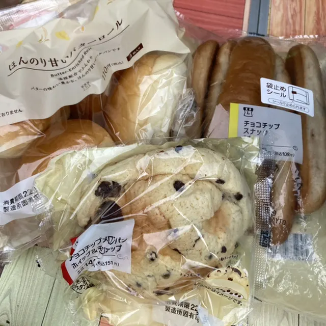
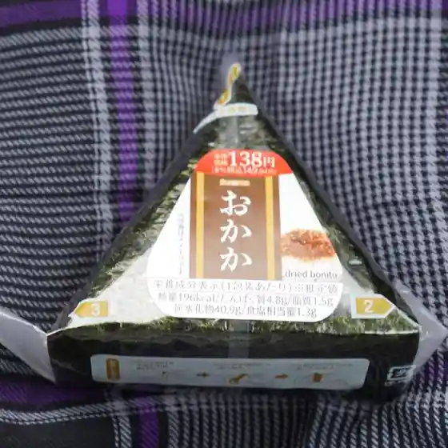
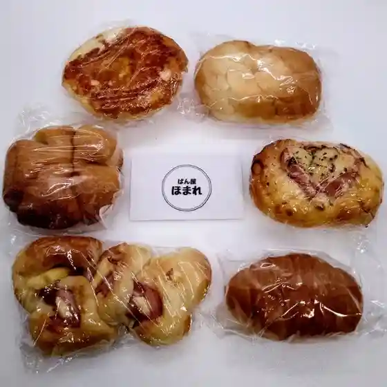
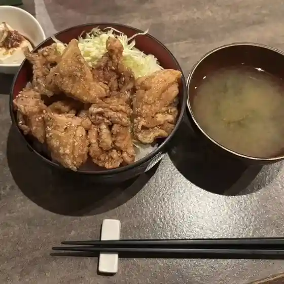
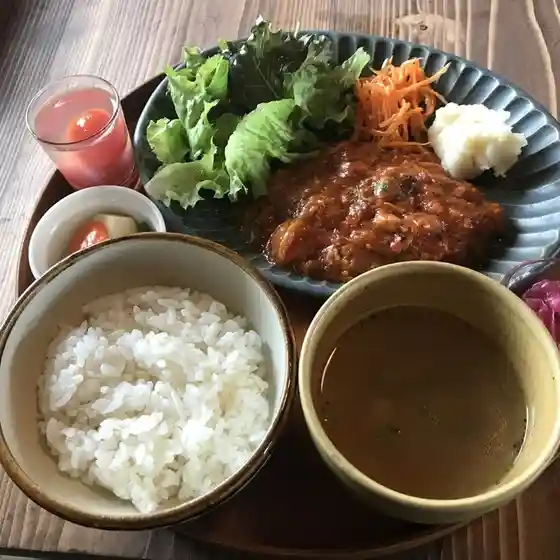

Uryu
Uryu · Hokkaido
Uryu
Highlighted on the Hokkaido map.
Stay
たびびとやど ゆき・ふる・さと
Tabibito Yado Yuki Furu Sato
Travellers' inn in Uryu, Hokkaido.
安田旅館
Yasuda Ryokan
Ryokan inn in Uryu, Hokkaido.
日の出ドライブイン
Hinode Drive-in
Drive-in inn in Uryu, Hokkaido.
ノムラハウス
Nomura House
Whole-house rental in Uryu, Hokkaido.
Dining
雨竜町ふれあいセンター 喫茶コーナー

Uryuu Machi Fureai Sentaa Kissa Koonaa
味処糸車

Ajidokoro Itoguruma
LAWSON 雨竜追分店

Lawson Uryuu Oiwake Mise
安田旅館

Yasuda Ryokan
セイコーマート いけだ雨竜店

Seikoomaato Ikeda Uryuu Mise
ぱん屋 ほまれ

Pan Ya Homare
スナックティファニー

Sunakkuteifanii
カフェようこそようこそ

Kafe Youkosoyoukoso
道の駅 田園の里うりゅう あいす館
Michi No Eki Den'En No Sato Uryuu Aisu Kan
やきとり倶楽部
Yakitori Kurabu
お食事処 まいちゃん
O Shokuji Tokoro Maichan
日の出ドライブイン
Hinode Doraibuin
道の駅 田園の里うりゅう 特産品直売施設
Michi No Eki Den'En No Sato Uryuu Tokusanhin Chokubai Shisetsu
豆電球
Mamedenkyuu
鈴木かまぼこ店 雨竜道の駅店
Suzuki Kamaboko Mise Uryuu Michi No Eki Mise
ゆき・ふる・さと
Yuki Furu Sato
道の駅 田園の里うりゅうレストラン
Michi No Eki Den'En No Sato Uryuu Resutoran
Sights
Uryu Numa Marsh
Uryu Numa Marsh